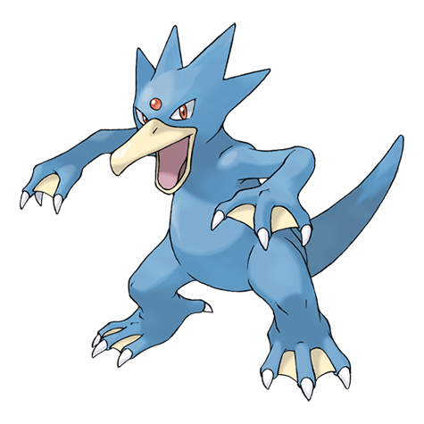
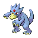

Назад
Голдак

Голдак — Покемон 1 поколения под номером 55 в Покедекс. Обитает он в регионе Канто и относится к Водяному типу. Это последняя стадия эволюции Покемона Псайдака. Перепончатые ласты передних и задних лап Голдака, так же как и его обтекаемое тело, придают этому Покемону пугающую скорость. Голдак, безусловно, намного быстрее всех известных спортивных пловцов.
Тип:
Водяной
Эволюция

# 055 Голдак
Финальная стадия